측량및지형공간정보산업기사 (2008-09-07 기출문제)
1과목: 응용측량
1. 갱내의 두 측점의 좌표가 A(100m, 200m), B(300m, 400m)이고 표고차는 17m일 때, AB점을 연결하는 수평거리는?
- 282.33m
- 282.84m
- 283.35m
- 283.88m
(정답률: 알수없음)

2. 그림과 같은 삼각형 ABC의 토지를 BC에 평행한 직선 DE로 △ADE:□BCED=2.3의 비율로 분할하려고 할 때 적당한 AD의 길이는?
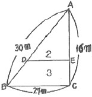
- 24.00m
- 18.97m
- 16.97m
- 13.00m
(정답률: 알수없음)
3. 운동장 조성을 위해 1구역의 면적을 180m2로 5개 구역으로 나누었는데 땅고르기할 전체 토량이 2844m3이었다. 이 운동장의 계획고는 얼마인가?
- 3.12m
- 3.14m
- 3.16m
- 3.18m
(정답률: 알수없음)
4. 곡선의 반지름이 600m, 교각이 60°인 원곡선을 설치할 때 현길이 20m에 대한 편각은?
- 1° 07‘ 30“
- 1° 07' 18"
- 0° 57‘ 30“
- 0° 57‘ 18“
(정답률: 알수없음)
5. 하천의 지형측량 범위에 따라 설명으로 옳지 않은 것은?
- 유제부에 있어서 제내지는 일반적으로 100m 이내까지로 한다.
- 무제부에 있어서는 홍수가 영향을 주는 구역보다 약간 넓게 한다.
- 제외지는 크기와 관계없이 전부를 범위로 한다.
- 홍수방어가 목적인 하천공사에서는 하구에서부터 상류의 홍수피해가 미치는 지점까지로 한다.
(정답률: 알수없음)
6. 단곡선 설치에서 비교적 정확도가 높아 가장 널리 사용하며 접선과 현이 이루는 각을 이용하는 방법은?
- 지거 설치법
- 장현에서의 종거에 의한 설치법
- 편각 설치법
- 접선에 의한 지거법
(정답률: 알수없음)
7. 다음 심프슨 법칙에 대한 설명으로 옳지 않은 것은?
- 심프슨의 제1법칙은 경계선을 2차 포물선으로 보고, 지거의 두 구간을 한 조로 하여 면적을 계산한다.
- 심프슨의 제2법칙은 지거의 두 구간을 한 조로 하여 경계선을 3차 포물선으로 보고 면적을 계산한다.
- 심프슨의 제1법칙은 구간의 개수가 홀수인 경우 마지막 구간을 사다리꼴 공식으로 계산하여 더해 준다.
- 심프슨 법칙을 이용하는 경우, 지거 간격은 균등하게 하여야 한다.
(정답률: 알수없음)
8. 단곡선을 설치하기 위한 조건 중 곡선시점(B, C)의 좌표가 XB.C=500.500m, YB.C=300.400m이고, 곡선반경(R)이 400m, 교각(I)이 60°, 곡선시점(B.C)로부터 교점(I.P)에 이르는 방위각이 45°일 경우 원곡선 중심의 좌표는?
- XO=210.657m, YO=563.242m
- XO=217.657m, YO=583.200m
- XO=217.657m, YO=583.243m
- XO=663.799m, YO=463.699m
(정답률: 알수없음)
9. 다음의 종단면도와 유토곡선(mass curve)으로부터 잘못 분석한 것은?
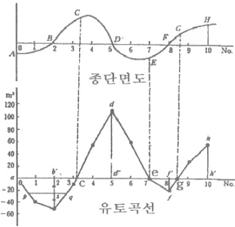
- 유토곡선이 하향인 구간은 성토구간이고 상향인 구간은 절토구간이다.
- 유토곡선의 저점은 성토에서 절토로 정점은 절토에서 성토로 바뀌는 점이다.
- c, e, g점은 절토량과 성토량이 거의 같은 평형상태를 나타낸다.
- AH구간에서 사토량은 dd'가 된다.
(정답률: 알수없음)
10. 클로소이드 곡선에서 매개변수 A가 80m일 때, 곡선 길이 50m에 대한 곡선 반지름은?
- 148m
- 138m
- 128m
- 118m
(정답률: 알수없음)
11. 하천의 유속측정에 있어서 최소유속, 최대유속, 평균유속, 표면유속의 4가지 유속은 크기가 다르게 나타난다. 이 4가지 유속을 하천의 표면에서부터 하저에 이르기까지 일반적으로 나타나는 순서대로 옳게 열거한 것은?
- 표면유속-최대유속-최소유속-평균유속
- 표면유속-평균유속-최대유속-최소유속
- 표면유속-최소유속-평균유속-최대유속
- 표면유속-최대유속-평균유속-최소유속
(정답률: 알수없음)
12. 도로를 개수하여 구곡선의 중앙(Co)에서 e=10m만큼 곡선을 내측으로 옳기고자 할 때, 신곡선의 반경은? (단, 구곡선의 반경(Ro)은 500m, 그 교각(I)은 90°, 접선방향은 변하지 않는 것으로 하며 Co, CN는 구곡선 및 신곡선의 중점, Ro, RN는 구곡선 및 신곡선의 반경이다.)
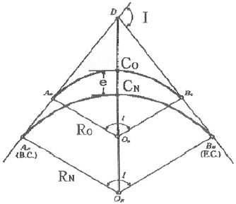
- 524.142m
- 510.000m
- 500.000m
- 475.858m
(정답률: 알수없음)
13. 시설물의 계획 설계 시 경관상 검토되는 위치결정에 필요한 측량은?
- 공공측량
- 자원측량
- 공사측량
- 경관측량
(정답률: 알수없음)
14. 유속측정에 있어서 수심(H)에 대하여 수심으로부터 0.2H, 0.6H, 0.8H 깊이의 유속이 0.562m/s, 0.497m/s, 0.364m/s 이었다면 3점법에 의한 평균유속은?
- 0.49m/s
- 0.48m/s
- 0.47m/s
- 0.46m/s
(정답률: 알수없음)
15. 노선측량의 순서가 바른 것은?
- 노선선점-계획조사측량-실시설계측량-세부측량-용지측량-공사측량
- 노선선정-계획조사측량-용지측량-실시설계측량-세부측량-공사측량
- 계획조사측량-노선측량-실시설계측량-용지측량-세부측량-공사측량
- 계획조사측량-노선측량-실시설계측량-용지측량-공사측량-세부측량
(정답률: 알수없음)
16. 지구에 연직방향인 A, B 2본의 수갱에 의해서 갱내외를 연결하는 경우, 갱외에서 수갱간의 거리가 400m일 때, 수갱깊이가 500m라면 두 수갱간 갱내외에서의 거리 차이는? (단, 지구는 반지름 6,340km의 구로 가정한다.)
- 0.8cm
- 1.6cm
- 3.1cm
- 6.2cm
(정답률: 알수없음)
17. 도로건설 구간에 그림과 같은 절토단면이 있다. 노선길이 20m의 절토량은?
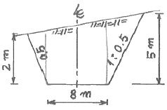
- 660m3
- 550m3
- 440m3
- 330m3
(정답률: 알수없음)
18. 하천의 수위 중 평수위에 대한 설명으로 틀린 것은?
- 일반적으로 평균수위보다 약간 낮다.
- 어떤 기간의 관측수위를 합계하여 관측횟수로 나누어 평균값을 구한 수위이다.
- 하천의 수애선을 결정하는 수위이다.
- 어느 기간 내에 관측 수위 중 높은 수위와 낮은 수위의 관측횟수가 같은 수위이다.
(정답률: 알수없음)
19. 터널 내외의 연결측량에 대한 설명으로 틀린 것은?
- 지상과 지하가 어떻게 연결되어 있는가에 따라서 측량방법이 다르다.
- 경사가 급한 경우에는 보조망원경이 있는 트랜싯을 사용해야 한다.
- 1개의 수직갱으로 연결할 경우에는 수직갱에 2개의 추를 매달아 연직면을 정한다.
- 추를 드리울 때 깊은 수갱에는 철선, 황동선 등이 사용되며 추의 중량은 5kg 이하이다.
(정답률: 알수없음)
20. 지하시설물의 관측방법 중 지구자장의 변화를 관측하여 자성체의 분포를 알아내는 방법은?
- 전자관측법
- 자기관측법
- 전기관측법
- 탄성파관측법
(정답률: 알수없음)
2과목: 사진측량 및 원격탐사
21. 복수의 입체모델에 대해 입체모델 각각에 상호표정을 행한 뒤에 접합점 및 기준점을 이용하여 각 입체모델의 절대표정을 수행하는 항공삼각측량의 블록조정방법은?
- 독립모델법
- 광속조정법
- 다항식조정법
- 에어로 폴리건법
(정답률: 알수없음)
22. 회전주기가 일정한 위성을 이용한 원격탐사의 특성이 아닌 것은?
- 단시간 내에 넓은 지역을 동시에 측정할 수 있으며 반복측정이 가능하다.
- 관측이 좁은 시야각으로 행해지므로 얻어진 영상은 정사투영에 가깝다.
- 탐사된 자료가 즉시 이용될 수 있으며 환경문제 해결 등에 유용하다.
- 위성의 회전주기가 일정하므로 원하는 지점을 원하는 시기에 관측할 수 있다.
(정답률: 알수없음)
23. 항공사진 촬영시 중복도를 증가시킬 경우 얻을 수 있는 효과는?
- 도화 작업량을 줄일 수 있다.
- 과고감을 크게 할 수 있다.
- 확대 도화를 할 수 있다.
- 사각부의 영향을 줄일 수 있다.
(정답률: 알수없음)
24. 초점거리 153.7mm, 사진크기 23cm×23cm의 항공사진상에서 삼각점 a, b의 거리는 145.0mm이고 이에 대응하는 지상 삼각점 A, B의 좌표(X, Y)와 표고 H는 표와 같다. 사진 내의 대부분을 차지하는 평탄한 지면의 표고가 50m 일 때 이 평지에 대한 축척은 얼마인가?
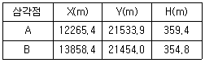
- 1/10000
- 1/12000
- 1/13000
- 1/15000
(정답률: 알수없음)
25. 항공삼각측량 결과로 얻을 수 없는 정보는?
- 건물의 높이
- 어떤 지점의 3차원 위치
- 지형의 경사도
- 댐에 저장된 물의 양
(정답률: 알수없음)
26. 다음 중 내부표정에 대한 설명으로 옳은 것은?
- 모델과 모델이나 스트립과 스트립을 접합 시키는 작업
- 사진의 초점거리와 지표를 바로잡는 작업
- 종시차를 소거하여 모델 좌표를 얻게 하는 작업
- 측지좌표로 축척과 경사를 바로잡는 작업
(정답률: 알수없음)
27. 항공사진 판독시 고려되어야 하는 요소를 크게 기본요소와 부가요소로 나눌 때 부가요소에 속하는 것은?
- 크기(Size)
- 상호위치관계(Association)
- 색조(Tone)
- 질감(Texture)
(정답률: 알수없음)
28. 도화를 행하기 위하여 사용한 밀착양화 필름의 지표간 거리를 관측하였더니 횡=221.39m, 종=220.16mm였다. 이 사진을 찍는 사진기는 지표간 거리가 224.8mm, 초점거리 200m 이었다면 도화기의 초점거리는 얼마로 하면 좋은가?
- 194.4mm
- 169.4mm
- 201.6mm
- 203.6mm
(정답률: 알수없음)
29. 다음 중 자원정보체계(RIS)에 대한 설명으로 옳은 것은?
- 수치지형모형, 전산도형해석기법과 조경, 경관요소 및 계획대안을 고려한 다양한 모의관측을 통하여 최적 경관계획안을 수립하는 정보체계
- 대기오염정보, 수질오염정보, 고형폐기물처리정보, 유해폐기물 등의 위치 및 특성과 관련된 전산정보체계
- 농산자원, 삼림자원, 수자원, 지하자원 등의 위치, 크기, 양 및 특성과 관련된 정보체계
- 수계특성, 유출특성 추출 및 강우빈도와 강우량을 고려한 홍수방재체제 수립, 지진방제체제 수립, 민방공체제구축, 산불방지대책 등의 수립에 필요한 정보체계
(정답률: 알수없음)
30. 우리나라 동경 128° 30‘ 북위 37° 지점의 평면직각좌표는 다음 중 어느 좌표 원점을 이용하는가?
- 서부원점
- 중부원점
- 동부원점
- 동해원점
(정답률: 알수없음)
31. 부영상소 보간방법 중 출력영상의 각 격자점(x, y)에 해당하는 밝기를 입력영상좌표계의 대응점(x', y') 주변의 4개 점간 거리에 따라 영상소의 경중률을 고려하여 보간 계산하는 방법은?
- nearest-neighbor interpolation
- bilinear interpolation
- bicubic convolution interpolation
- kriging interpolation
(정답률: 알수없음)
32. 비행고도 6000m로부터 초점거리 15cm의 카메라로 1500m 간격으로 촬영한 사진에서 비고가 172m 일 때 시차차는?
- 1.5⑤mm
- 1.290mm
- 1.075mm
- 0.788mm
(정답률: 알수없음)
33. 다음 중 레이저 스캐너와 GPS/INS로 구성되어 수치표고모델(DEM)을 제작하기에 용이한 측량시스템은?
- LIDAR
- RADAR
- SAR
- SLAR
(정답률: 알수없음)
34. 벡터자료에 위상이 부여됨으로써 시 행정구역을 나타내는 폴리곤과 그 안의 동 행정구역들을 표표현하는 폴리곤과의 관계를 나타내는 특성은?
- 인접성
- 근접성
- 계급성
- 연결성
(정답률: 알수없음)
35. 동일한 촬영고도에서 수직사진을 촬영할 경우 가장 넓은 지역이 촬영되는 사진기는?
- 협각렌즈 사진기
- 보통각렌즈 사진기
- 광각렌즈 사진기
- 초광각렌즈 사진기
(정답률: 알수없음)
36. 초점거리 15cm의 사진기로 해면으로부터 3000m 상공에서 촬영한 어느 산정의 사진 축척이 1/16000이었다면 이 산정의 표고는 얼마인가?
- 500m
- 600m
- 700m
- 800m
(정답률: 알수없음)
37. GIS의 자료구조에 대한 설명 중 틀린 것은?
- 점은 하나의 노드로 구성되어 있고, 노드의 위치는 좌표를 표현한다.
- 선은 두 개의 노드와 수 개의 버텍(Vertex)로 구성되어 있고, 노드 혹은 버텍스는 링크로 연결된다.
- 면은 하나 이상의 노드와 수 개의 버텍스로 구성되어 있고, 노드 혹은 버텍스는 링크로 연결된다.
- TIN은 연속적인 삼각면으로 지표면을 표현하는 것으로 각 삼각면의 중앙점에서 해당지점의 고도값을 표현한다.
(정답률: 알수없음)
38. 대기의 창(Atmospheric window)이란 무엇을 의미하는가?
- 대기 중에서 전자기파 에너지 투과율이 높은 파장대
- 대기 중에서 전자기파 에너지 반사율이 높은 파장대
- 대기 중에서 전자기파 에너지 흡수율이 높은 파장대
- 대기 중에서 전자기파 에너지 산란율이 높은 파장대
(정답률: 알수없음)
39. GIS에서 표준화가 필요한 이유를 설명한 것 중 타당하지 않은 것은?
- .서로 다른 기관간 데이터의 복제를 방지하고 데이터의 보안을 유지하기 위하여
- 데이터의 제작시 사용된 하드웨어(H/W)나 소프트웨어(S/W)에 구애받지 않고 손쉽게 데이터를 사용하기 위하여
- 표준 형식에 맞추어 하나의 기관에서 구축한 데이터를 많은 기관들이 공유하여 사용할 수 있으므로
- 데이터의 공동 활용을 통하여 데이터의 중복 구축을 방지함으로써 데이터 구축 비용을 절약하기 위하여
(정답률: 알수없음)
40. 항공사진 판독에서 필요로 하는 중요 요소로 가장 거리가 먼 것은?
- 촬영조건
- 색조
- 형태, 크기 및 모양
- 촬영용 비행기 종류
(정답률: 알수없음)
3과목: GIS 및 GPS
41. 기준국을 고정하여 기계를 설치하고 이동국으로 측량하며 모뎀을 이용하여 실시간으로 좌표를 얻음으로써 현황측량등에 이용하는 GPS 측량기법은 무엇인가?
- DGPS
- RTK
- 절대측위
- 정지측위
(정답률: 알수없음)
42. 결합 트래버스에서 A점에서 B점까지의 합위거가 152.70m, 합경거가 653.70m일 때 폐합오차는 얼마인가? (단, A점 좌표 XA=76.80m, YA=97.20m, B점 좌표 XB=229.62m, YB=750.85m)
- 0.11m
- 0.12m
- 0.13m
- 0.14m
(정답률: 알수없음)
43. 삼각점 성과표에 기재되어야 할 내용이 아닌 것은?
- 경도 및 위도
- 삼각점의 등급 및 명칭
- 거리의 대수
- 표고의 대수
(정답률: 알수없음)
44. 1km 앞에 있는 폭 5cm인 물체의 사이에 낀 각도는 얼마인가?
- 1.03"
- 1.3"
- 10.3"
- 20.6"
(정답률: 알수없음)
45. 그림과 같은 레벨의 조정에서 B점의 관측값(2.80)에 대한 조정값은? (단, 단위 : m)
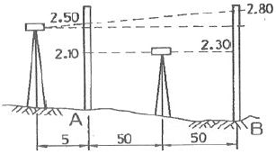
- 2.685m
- 2.695m
- 2.7⑤m
- 2.715m
(정답률: 알수없음)
46. 아래 그림과 같이 관측된 거리를 최소제곱법으로 조정하기 위한 관측방정식으로 옳은 것은? (여기서
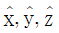
: 최확값, UX, UY, UZ : 잔차)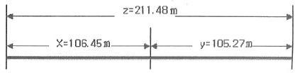
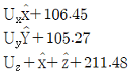
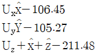
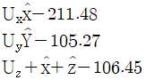
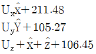
(정답률: 알수없음)
47. 등고선의 종류에 대한 설명 중 옳은 것은?
- 등고선의 간격은 계곡선→주곡선→조곡선→간곡선 순으로 작아진다.
- 간곡선은 가는 점선으로 표시한다.
- 계곡선은 조곡선 5개 마다 1개씩 표시한다.
- 일반적으로 등고선의 간격이란 주곡선의 간격을 의미한다.
(정답률: 알수없음)
48. 표고 30m인 B.M.의 후시가 Xm, 구하고자 하는 점의 중간시가 Ym일 때, 구하고자 하는 점의 지반고를 구하는 식은?
- 30m-Xm+Ym
- Xm+Xm
- 30m+Xm-Ym
- Xm-Ym
(정답률: 알수없음)
49. GPS측량의 체계구성을 크게 3가지로 나눌 때 해당되지 않는 것은?
- 사용자부분
- 우주부분
- 제어부분
- 신호부분
(정답률: 알수없음)
50. 지역측지좌표를 세계측지좌표로 변환할 때 사용되는 모델종류가 아닌 것은?
- Bursa-Wolf Model
- Digital Terrain Model
- Moldensky-Badekas Model
- Veis Model
(정답률: 알수없음)
51. 삼각측량에서 변장은 어떠한 값인가?
- 지상거리
- 깁준면 상에 투영한 수평거리
- 도상거리
- 두 삼각점 간의 경사거리
(정답률: 알수없음)
52. 눈의 높이가 2m이고 빛의 굴절수가 0.18일 때 해변에서 볼 수 있는 수평선까지의 거리는? (단, 지구의 곡률반경 R=6,400km)
- 5.6km
- 6.2km
- 7.4
- 8.5km
(정답률: 알수없음)
53. 어떤 기선을 4회 관측한 결과 다음과 같은 값을 얻었다. 이 기선의 최확값의 평균제곱근오차는 얼마인가?
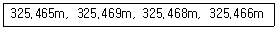
- 325.467m±0.8mm
- 325.467m±0.9mm
- 325.465m±1.0mm
- 325.465m±1.1mm
(정답률: 알수없음)
54. 그림과 같은 지형을 교호수준 측량하여 다음과 같은 결과를 얻었다. A점의 표고가 60.235m일 때 B점의 표고는? (단, a1=1.876m, b1=0.896m, a2=0.980m, b2=0.435m)
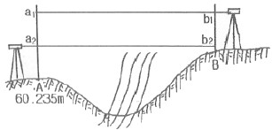
- 61.566m
- 61.325m
- 60.998m
- 60.650m
(정답률: 알수없음)
55. 다음 삼각망 중에서 조건식의 수가 가장 많으며 정확도가 가장 높은 것은?
- 사변형망
- 단열삼각망
- 유심다각망
- 육각형망
(정답률: 알수없음)
56. 거리측량결과 잔차 제곱의 합이 0.⑤79이고, 잔차의 합이 -0.15일 때 표준편차는? (단, 10회 관측이고 경중률이 같으며 단위는 m임)
- ±0.16m
- ±0.12m
- ±0.08m
- ±0.04m
(정답률: 알수없음)
57. 수준측량에서 5km 왕복측정에서 허용오차가 10mm일 때 2km 왕복측정의 경우 허용오차는 약 얼마인가?
- 9.5mm
- 8.4mm
- 7.2mm
- 6.3mm
(정답률: 알수없음)
58. 등고선의 성질에 대한 설명으로 옳지 않은 것은?
- 등고선은 절벽이나 동굴 등의 특수한 지형 외는 합치거나 교차하지 않는다.
- 등고선은 경사가 같은 곳에서도 간격이 일정하지 않다.
- 등고선 간의 최단 거리의 방향은 그 지표면의 최대 경사의 방향을 가리키며 최대경사의 방향은 등고선에 수직인 방향이다.
- 등고선은 분수선과 직교한다.
(정답률: 알수없음)
59. 다음 중 위성항법시스템(GNSS)의 종류가 아닌 것은?
- GPS
- SPS
- GLONASS
- GALILEO
(정답률: 알수없음)
60. 토탈스테이션의 기능이 아닌 것은?
- EDM이 갖고 있는 거리 측정 기능
- 디지털 데오도라이트가 갖고 있는 측각 기능
- 각과 거리 측정에 의한 좌표계산 기능
- 3차원 형상을 측정하여 체적을 구하는 기능
(정답률: 알수없음)
4과목: 측량학
61. 측량기술자가 자기의 명을 사용하여 다른 사람에게 측량용역업무를 수행하게 하거나 측량기술경력증을 대여한 경우에 측량기술자의 업무정지 기준으로 옳은 것은?
- 6개월 이내의 기간을 정하여 측량용역업무를 정지시킬 수 있다.
- 1년 이내의 기간을 정하여 측량용역업무를 정지시킬 수 있다.
- 2년 이내의 기간을 정하여 측량용역업무를 정지시킬 수 있다.
- 3년 이내의 기간을 정하여 측량용역업무를 정지시킬 수 있다.
(정답률: 알수없음)
62. 다음 측량표 중 영구표지가 아닌 것은?
- 표기
- 자기점표석
- 수준점표석
- 검조장
(정답률: 알수없음)
63. 정부발행 지형도의 축척별 주곡선 간격으로 옳지 않은 것은? (단, 축척 - 등고선 간격)
- 1:250,000 - 100m
- 1:50,000 - 20m
- 1:25,000 - 10m
- 1:5,000 - 2m
(정답률: 알수없음)
64. 측량업자로서 경쟁입찰에 있어서 입찰자 간에 미리 조작한 가격으로 입찰한 자의 벌칙은?
- 1년 이하의 징역 또는 1천만원 이하의 벌금
- 2년 이하의 징역 또는 2천만원 이하의 벌금
- 3년 이하의 징역 또는 3천만원 이하의 벌금
- 200만원 이하의 과태료
(정답률: 알수없음)
65. 다음 중 1년 이하의 징역 또는 1000만원 이하의 벌금에 처하는 사항으로 옳은 것은?
- 측량업의 등록증 및 등록수첩을 대여한 자와 그 상대방
- 정당한 사유없이 측량의 실시를 방해한 자
- 고의로 측량성과를 사실과 다르게 한 자
- 부정한 방법으로 측량업의 등록을 한 자
(정답률: 알수없음)
66. 기본측량의 측량성과 고시에 포함되는 사항이 아닌 것은?
- 측량의 정확도
- 임시로 설치하는 측량표지의 수
- 측량성과의 보관장소
- 측량의 규모(면적 또는 지도의 매수)
(정답률: 알수없음)
67. 지물의 변동에 의해 발생한 기본측량의 성과가 다르게 된 때 누구에게 보고 해야 하는가?
- 국토지리정보원장
- 지적공사장
- 대한측량협회장
- 한국측량학회장
(정답률: 알수없음)
68. 지도도식에서 지물의 실제형상 또는 상징물의 표현은 무엇으로 하는가?
- 선 또는 기호
- 숫자
- 문자
- 주기
(정답률: 알수없음)
69. 측량심의회의 위원장을 지명할 권한이 있는 자는?
- 국토해양부장관
- 국토지리정보원장
- 국무총리
- 대한측량협회장
(정답률: 알수없음)
70. 기본측량에 관한 장기 계획은 누가 수립하는가?
- 국토해양부장관
- 국토지리정보원장
- 서울특별시장, 광역시장, 도지사
- 시장, 군수
(정답률: 알수없음)
71. 현행 측량법에서 정한 측량업의 종류의 명칭이 아닌 것은?
- 측지측량업
- 연안조사측량업
- 지도제작업
- 수치측량업
(정답률: 알수없음)
72. 공공측량 및 일반측량에서 제외되는 측량이 아닌 것은?
- 고도의 정확도를 필요로 하여 국토해양부장관이 고시하는 측량
- 지적법에 의한 지적측량
- 수로업무법에 의한 수로측량
- 국지적 측량으로서 국토해양부장관이 고시하는 측량
(정답률: 알수없음)
73. 기본측량에 관한 설명으로 옳은 것은?
- 국토해양부장관은 기본측량에 관한 년간계획을 수립한다.
- 기본측량을 실시하고자 하는 경우에는 미리 그 지역 및 기간을 관할경찰서에 통지하여야 한다.
- 기본측량에 종사하는 자는 측량을 실시하기 위하여 필요한 때는 타인의 토지나 건물에 출입할 수 있다.
- 기본측량에 종사하는 자가 측량실시를 위해 장애물을 제거할 때 소유자 또는 점유자의 승낙을 받을 필요는 없다.
(정답률: 알수없음)
74. 공공측량(公共測量)의 실시에 기초가 되는 것은?
- 기본측량 또는 다른 공공측량의 성과
- 기본측량 또는 지적측량의 성과
- 지적측량의 성과
- 삼각점과 수준점 사용
(정답률: 알수없음)
75. 공공측량을 위하여 설치된 영구표지의 관리자는?
- 국토지리정보원장
- 국토해양부장관
- 행정안전부장관
- 당해측량계획기관
(정답률: 알수없음)
76. 지형도에 표기하는 삼각점 표고 수치는 m 단위로 소수점 이하 몇 자리까지 표시하는가?
- 1 자리까지
- 2 자리까지
- 3 자리까지
- 4 자리까지
(정답률: 알수없음)
77. 측량법에서 정의된 용어에 대한 설명 중 그 내용이 옳지 않은 것은?
- 측량에는 지도의 제작, 연안해역의 측량과 측량용사진의 촬영을 포함한다.
- 일반측량이라 함은 기본측량 및 공공측량외의 측량을 말한다.
- 측량계획기관이라 함은 기본측량 및 공공측량에 관한 계획을 수립하는 자를 말한다.
- 기본측량이라 함은 모든 측량의 기초가 되는 측량으로서 국토해양부장관의 명을 받아 지방자치단체의 장이 실시하는 것을 말한다.
(정답률: 알수없음)
78. 측량업의 등록을 취소하여야 하는 사유에 해당되지 않는 것은?
- 최근 2년간 영업실적이 년 평균금액이 대통령령이 정하는 금액에 미달할 때
- 다른 사람에게 자기의 등록증 또는 등록수첩을 대여한 때
- 영업의 정지처분에 위반한 때
- 허위 기타 부정한 방법으로 측량업 등록을 한 때
(정답률: 알수없음)
79. 측량법에서 지표면의 변동사항으로 측량성과를 수정하여야 하는 경우에 해당하지 않는 것은?
- 지각의 변동
- 지물의 변동
- 지모의 변동
- 지명의 변동
(정답률: 알수없음)
80. 공공측량업 및 일반측량업의 등록은 다음 중 누구에게 신청하는가?
- 국토해양부장관
- 지방국토관리청장
- 특별시장ㆍ광역시장 또는 도지사
- 국토지리정보원장
(정답률: 알수없음)
AB의 x좌표 차이 = 300m - 100m = 200m
그리고 두 점 사이의 거리를 구하기 위해서는 피타고라스의 정리를 이용할 수 있다.
AB의 y좌표 차이 = 400m - 200m = 200m
AB의 수평거리 = √(200² + 200²) ≈ 282.84m
따라서, 정답은 "282.84m"이다.